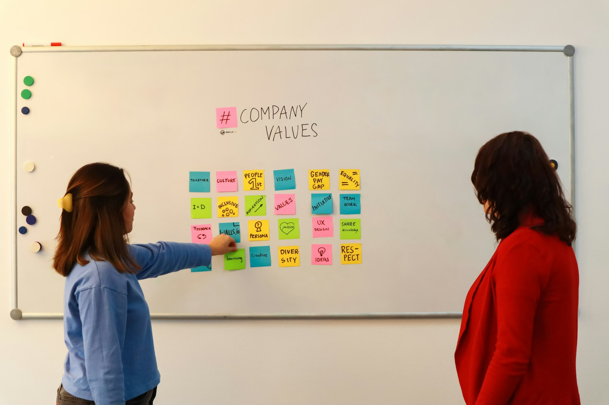

TL;DR
To earn from your niche blog, focus on creating high-quality, audience-targeted content, define your niche clearly, and diversify your income sources. Expect a growth timeline of 3-6 months. Start monetizing through affiliate marketing and digital products while enhancing SEO to scale your efforts.
Are You Ready to Start a Niche Blog?
If you're overwhelmed by online advice or have launched your niche blog without seeing meaningful income, you're in the right place. Many beginners expect quick financial success, neglecting key steps like audience targeting and content strategy.
For example, a food blogger who simply posts recipes without engaging with their audience will struggle. On average, 70% of new blogs fail within their first year due to common missteps.
Why Your Niche Blog Might Not Be Earning
### Why Your Niche Blog Might Not Be Earning
Many aspiring bloggers struggle to generate income because they follow outdated advice without tailoring it to their unique situation. One common mistake is believing that simply posting high-quality content will automatically attract visitors and revenue.
This is a misconception that can lead to frustration and disillusionment.
For instance, consider a food blogger who diligently publishes well-crafted recipes. While the content may be top-notch, without a solid promotion strategy or keyword optimization, it might take months before they see substantial traffic.
In fact, a beginner blog often won't generate any income in the first 6 to 12 months, especially if it lacks a defined audience. It’s essential to understand that blogging isn’t just about creating content; it’s also about being proactive in sharing that content across various platforms.
Effective promotion includes leveraging social media, participating in relevant online communities, and implementing SEO strategies to enhance discoverability.
A beginner might invest hours writing articles only to neglect how to effectively share them. For example, simply sharing a blog post once on Twitter may yield limited results.
Instead, consistent engagement, such as joining Twitter chats or posting updates multiple times with varying messages, can significantly boost visibility.
Additionally, many newbies harbor unrealistic expectations, anticipating income from day one. In reality, generating significant revenue often requires building a robust email list, which might take months or even years to cultivate.
Research indicates that most successful bloggers don't see meaningful income until they've created up to 50 high-quality posts and actively start monetizing through affiliate marketing or ads.
Let's take the case of Sarah, who started a parenting niche blog
The Core Workflow for Building a Niche Blog
To set up a successful niche blog, follow a structured workflow: 1. Define Your Niche: Identify the specific area of interest you want to focus on, ensuring it has an audience. 2. Choose a Domain Name: Your domain should reflect your niche and be easy to remember. Use tools like Namecheap or GoDaddy to secure it. 3. Select a Hosting Provider: Use reliable options like Bluehost or SiteGround for hosting. 4. Install WordPress: This user-friendly platform is ideal for bloggers. Most hosts offer easy one-click installations. 5. Create Content: Develop a content calendar to maintain consistency. Aim for high-value, engaging posts that answer your target audience's questions. 6. Drive Traffic: Use SEO techniques, social media, and collaborations to attract visitors
A Real Example of Blog Growth and Monetization
### A Real Example of Blog Growth and Monetization
Take the case of a travel blogger named Sarah, who launched her site "BudgetWanderlust" in January, focusing specifically on budget travel tips.
Within just three months, she successfully earned $500 through a combination of affiliate marketing partnerships, particularly with a popular travel gear retailer like REI, and sponsored posts from small travel companies eager to reach her growing audience.
Sarah's success was a result of a multi-faceted strategy. Initially, she offered a free ebook titled "7 Essential Budget Travel Hacks" in exchange for email sign-ups, which helped her grow her newsletter to over 2,000 subscribers.
Each week, she consistently sent out valuable content—such as destination guides and budget-saving techniques—leading to a 25% open rate and a 6% click-through rate on her promotions.
A notable tactic she employed was hosting a monthly giveaway, where participants could win travel gear by sharing her blog on social media or signing up for her newsletter.
This not only increased her engagement but also expanded her readership by 30% over two months.
As Sarah's audience grew, she optimized her content based on analytics. For instance, she noticed that posts about "Traveling on $50 a Day" outperformed others, prompting her to create a dedicated series around that theme.
Mistakes to Avoid That Can Cost You Income

### Mistakes to Avoid That Can Cost You Income
Many bloggers jeopardize their income potential due to common mistakes. One glaring pitfall is failing to diversify income streams. Depending solely on one method, such as display ads, can be precarious.
For example, if a blogger earns $500 per month solely from ad revenue, any fluctuation in traffic or changes in ad algorithms can drastically reduce earnings.
Instead, consider integrating additional income sources. Affiliate marketing can yield anywhere from 5% to 30% commission on products sold through your referral links, while selling digital products like eBooks or courses can bring in a one-time revenue boost of $1,000 or more, depending on your audience size.
Neglecting audience engagement is another critical mistake that can stifle growth and revenue. For instance, if a blogger fails to respond to reader comments or emails, they risk losing loyal followers who feel undervalued.
A lack of interaction could lead to a decline in blog traffic, sometimes dropping by 30% or more over a few months, dramatically lowering potential income.
Keep an eye on your analytics; if you notice engagement rates plummeting, it may take weeks or even months to recover lost traffic. Understand your audience's needs by conducting surveys or polls, which can be done monthly.
By actively seeking input and responding to feedback, you not only foster loyalty but also ensure that you're creating content that resonates with your readers.
What to Do Next After Your Blog Starts Earning
Once your blog begins generating income, focus on strategies to amplify your growth. First, enhance your SEO by refining keyword strategies, focusing on long-tail keywords that target niche audiences.
This can attract more organic traffic. Second, explore affiliate marketing through platforms like Amazon Associates or ShareASale to boost revenue.
Third, consider creating online workshops or courses related to your niche, utilizing platforms such as Teachable or Udemy, which can also serve to engage your audience further.
FAQ
How long does it take to start earning from a niche blog?
Typically, it takes 3 to 6 months for a niche blog to generate any significant income, depending on traffic and monetization methods.
What are the best ways to monetize a niche blog?
Effective monetization strategies include affiliate marketing, sponsored posts, ad revenue, and selling digital products.
How often should I post content on my blog?
Aim for at least one high-quality post per week, although consistency and engagement are more important than frequency.
Can I start a niche blog without a technical background?
Yes, many platforms like WordPress offer user-friendly interfaces that allow beginners to create a blog without coding skills.
What are common mistakes to avoid when starting a niche blog?
Avoid neglecting your audience, failing to diversify income streams, and not engaging with your readers.
This article has been reviewed for practical usefulness and is updated as new information arises.
Next step
Use the article as a decision point, not just reading material. Your next system matters more than more browsing.
Search more articles
Find related tools, workflows, and guides.